The following remarks arose from a close examination of the original corpus in the Vithkuqi script, written by the inventor of the script himself.
The publication of these primers, inspired by the ideas of European Enlightenment, for many historians marks the beginning of the Albanian National Awakening (Rilindja Kombëtare). Shortly after, between 1846 and 1849, Naum Veqilharxhi passed away. No other work is known to have been written in the script. All following sporadic mentions or uses of the script, which the previous proposals heavily relied upon, are secondary and do not faithfully represent the writing system used in the original works.
UnicodeData.txt.
105BE;VITHKUQI SEMIVOCALIC MARK;Sk;0;L;;;;;N;;;;;
To NamesList.txt.
1057D VITHKUQI CAPITAL LETTER HHA * used in 19th-century orthography 1057F VITHKUQI CAPITAL LETTER IJE % VITHKUQI CAPITAL LETTER I WITH SEMIVOCALIC MARK * used in 19th-century orthography 105A4 VITHKUQI SMALL LETTER HHA * used in 19th-century orthography 105A6 VITHKUQI SMALL LETTER IJE % VITHKUQI SMALL LETTER I WITH SEMIVOCALIC MARK * used in 19th-century orthography
The semivocalic mark (called σημεῖον τοῦ ἡμιφώνου in the 1844 primer and shënimi gjusmëzëesë in the 1845 one) resembles a Latin s, and is described as a mark for semivowels. It is only ever found on ⟨𐖥⟩ i, itself exclusively in the sequences ⟨𐖡𐖦⟩ gj, ⟨𐖧𐖦⟩ j or, less commonly, ⟨𐖰𐖦⟩ q. Veqilharxhi did not consider ⟨𐖦⟩ to be a separate letter of the alphabet, as he never includes it in alphabet lists. In contrast, he often provides the semivocalic mark as a stand-alone symbol as he explains the alphabet. Nevertheless, ⟨𐖦⟩ has already been encoded as a precomposed letter, under the confusing name VITHKUQI SMALL LETTER IJE (U+105A6), together with an unattested uppercase counterpart. A separate codepoint for the stand-alone symbol is required to properly digitise the instances in which he explains the mark's function. We propose a new non-combining codepoint VITHKUQI SEMIVOCALIC MARK (U+105BE).
The codepoint U+105BE is chosen over U+105BD which, like U+1057B, U+1058B, U+10593, U+10596, U+105A2, U+105B2 and U+105BA, is reserved for hypothetical unattested letters which would correspond to modern days digraphs, which in the original works are actually represented either by other already-encoded letters or by combinations thereof.
In view of the characters VITHKUQI CAPITAL LETTER IJE (U+105A6) and VITHKUQI SMALL LETTER IJE (U+1057F) being precomposed forms rather than letters of their own right, we furthermore recommend correcting the name LETTER I WITH SEMIVOCALIC MARK, following standard behaviour of precomposed forms. The name IJE is unprecedented, not found in neither Veqilharxhi's writing, on which all the other letter names are based, nor in any secondary source.
The codepoints for ⟨𐖤⟩ HHA (U+105A4, U+1057D) and ⟨𐖦⟩ IJE (U+105A6, U+1057F), thoroughly described above, currently have an annotation “used in 19th-century orthography.” This is not descriptive, as the entire script was used exclusively in the 19th century. Revivalist attempts are too negligible and irregular to be taken into consideration by Unicode, and there is no telling they would not use these two letters as well.
The two last sections both happen to be bothered with the codepoint U+1057F, which was called VITHKUQI CAPITAL LETTER IJE for a supposed capital form of the precomposed glyph of i with semivocalic mark. We are requesting these changes to that codepoint merely for parallelism to the changes we propose to its lowercase form, as in fact, this letter is the only one encoded in the block to never be attested in the primary sources.
Its lack of attestation is not due to the limitedness of the corpus, but due to its impossibility to ever occur. The letter, following orthographical rules, can never occur word-initially, and the script, emulating cursive handwriting, has unsurprisingly no attested instance of all-capital text: even title pages and section headers follow usual capitalisation rules.
We are not interested in recommending any action regarding this and accept its inclusion for structural or presentational purposes, but given the unexpected centrality of this letter in our proposal, we found it necessary to briefly cover the topic, to let it be known that anything about the letter, from its existence to its proposed shape, is conjectural. For example, assuming its existence, it is not unlikely that following how Greek diacritics behave, the semivocalic mark could have actually moved to the left of the letter rather than being kept above it, making such an alternative shape equally as valid as the putative shape we are currently proposing.
Much like other Albanian native and Greek-derived alphabets, the Vithkuqi script also had a consistent way of denoting the voiced velar fricative /ɣ/, absent from modern standard Albanian, but present, although marginal, in the Greek-influenced dialects of southern Albania. The symbol, absent from alphabet lists and left unexplained in his writing, consists of the letter ⟨𐖡⟩ g with a breve-like sign above. This can be handled with the COMBINING BREVE (U+0306), although due to lack of documentation of the glyph no font currently displays this properly.


Feedback on the official chart. The current shapes are good, but they are often not the most common.
| Transcription | Chart image | 1844 presentational forms | 1844 used forms | 1845 presentational forms | 1845 used forms | Notes | |
|---|---|---|---|---|---|---|---|
| Cursive | Back-letter | ||||||
| b | 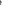 |
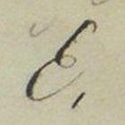 |
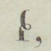 |
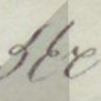 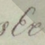 |
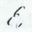 |
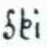 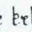 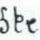 |
Should not bend above. |
| i | 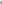 |
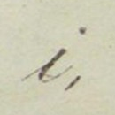 |
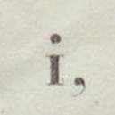 |
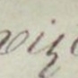 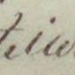 |
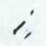 |
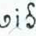 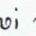 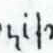 |
The tick above is for ligation, it isn't part of the letter itself. |
| j | 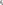 |
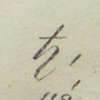 |
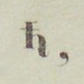 |
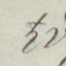 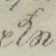 |
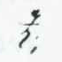 |
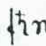 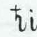 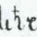 |
It should not loop and it should not bend above. |
| t | 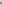 |
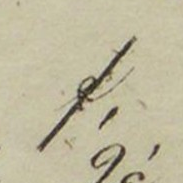 |
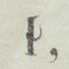 |
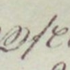 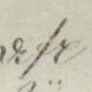 |
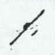 |
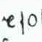 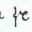 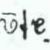 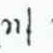 |
The loop is much too promintent, which makes it look like a structural element of the letter. It should be more like a squiggle for ligation. |
| z | 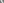 |
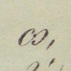 |
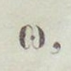 |
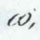 |
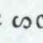 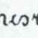 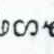 |
There should be no squiggle on the middle dot. Furthermore, there is no reason for the line not to be continuous while going through the dot. | |
| I | 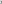 |
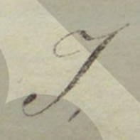 |
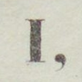 |
The current shape given is common in italicised text, in Roman font style it should look as indicated. | |||
| Dh | There should be a mane on top just like for capital T. | ||||||
| D | |||||||
| T | Although the loop is a bit more visible than it is for the lowercase letter, it is still too prominent. | ||||||
| O | — | There shouldn't be that squiggle on top. A basic circle is good. | |||||
| M | The proportions could be better. | ||||||